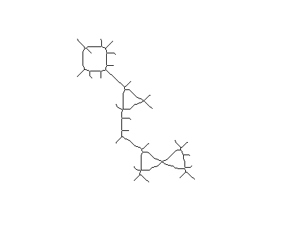
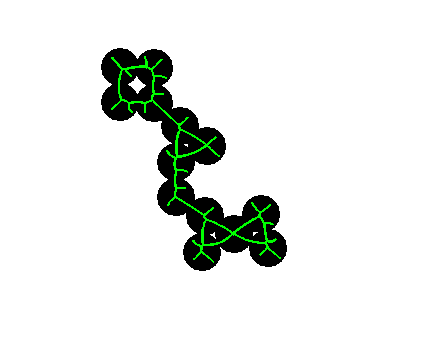
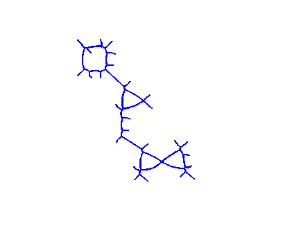

Contents
function fitCurvesCircleSkeleton(varargin)
Open input image
img = imread('circles.png');
skel = bwmorph(img, 'skel', 'Inf');
skel = bwmorph(skel, 'shrink');
figure; imshow(skel==0)

Compute curve coeffs
coeffs = polynomialCurveSetFit(skel, 2);
figure; imshow(~img); hold on;
for i = 1:length(coeffs)
hc = drawPolynomialCurve([0 1], coeffs{i});
set(hc, 'linewidth', 2, 'color', 'g');
end

Display only curves
figure; imshow(ones(size(img))); hold on;
for i = 1:length(coeffs)
hc = drawPolynomialCurve([0 1], coeffs{i});
set(hc, 'linewidth', 2, 'color', 'b');
end
